Fotografar paisagens, sejam exóticas, sejam simples, é uma prática muito comum. A
intenção é captar um momento que se
deseja eternizar.
EnesEvren/iStockphoto.com
Os séculos XIX e XX foram marcantes ao campo artístico, especialmente em relação ao
desenvolvimento de equipamentos utilizados para a captura de imagens e, consequentemente, ao surgimento de
novas formas artísticas. Nesse contexto, ganham espaço a fotografia e o cinema; este alcançou grande
dimensão comercial e alterou a relação do público com a arte, sendo hoje um dos campos mais explorados
pela indústria cultural. Na fotografia, o gênero retrato se popularizou e provocou importantes mudanças no
campo da pintura.
Neste capítulo, vamos examinar o surgimento da fotografia e do cinema e seus
impactos socioculturais.
Como a fotografia alterou a pintura em relação à forma de representação do
entorno?
A fotografia pode ser uma forma de arte ou é apenas um registro do momento ou de
pessoas e objetos?
Qual é a relação entre fotografia e cinema?
Neste capítulo serão abordadas as habilidades
EM13LGG601,EM13LGG602,EM13LGG603
e
EM13LGG604.
Arte em leitura
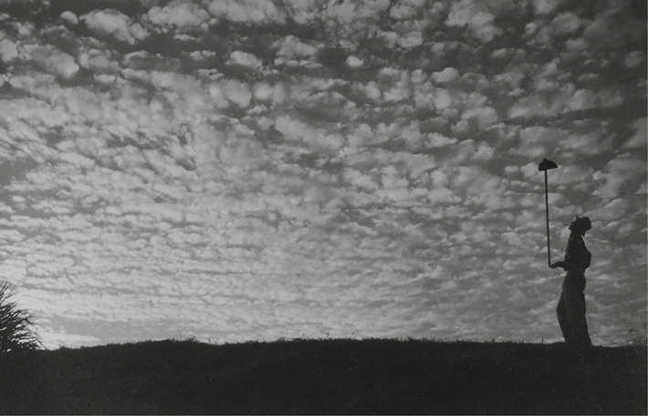
OHARA, Haruo. Nuvem da manhã, 1952.
Haruo Ohara/Acervo Instituto Moreira Salles
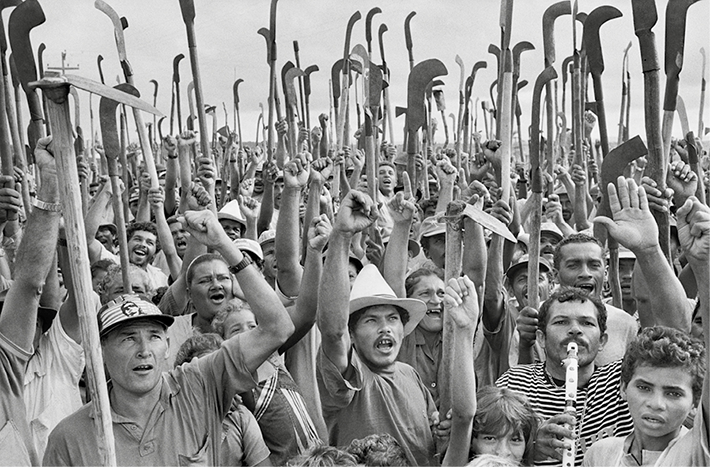
SALGADO, Sebastião. Manifestação dos Sem-Terra, 1997.
Sebastião Salgado
Em relação à poética dos dois fotógrafos, quais diferenças é possível notar entre
as imagens apresentadas?
Em sua opinião, quais elementos permitem dimensionar uma fotografia como
artística?
Qual seria a intencionalidade do fotógrafo com esses registros: documental,
poética, jornalística ou publicitária?
Da fotografia ao cinema
A fotografia foi inventada nas primeiras décadas do século XIX e revolucionou a
maneira de registrar imagens. Em 1822, o francês Joseph
Nicéphore Niépce (1765-1833) conseguiu fixar a primeira imagem fotográfica, mas ela apagava rapidamente.
Em um experimento, realizado em 1826, Niépce conseguiu gravar a
vista da janela de sua casa por meio de um processo químico chamado
heliografia, que significa gravura sob a luz do sol. Esse procedimento
utilizava uma placa de estanho com um derivado de petróleo fotossensível chamado Betume da Judeia. Mas
para gravar a imagem por meio da
heliografia foram necessárias cerca de oito horas de exposição, sem que
a câmera escura fosse movida. Essa é considerada a primeira fotografia
permanente do mundo, ou seja, a fixação de uma imagem real sobre determinada superfície sensível.
Em 1829, o francês Louis Jacques Mandé Daguerre (1787-1851), depois
de participar das pesquisas de Niépce, criou uma forma de registro visual
por meio da sensibilidade da prata iodizada à luz. O equipamento fixava
as imagens obtidas na câmera escura em uma folha de prata sobre uma
placa de cobre. Após a morte de Niépce, Daguerre continuou com as
pesquisas e, em 1839, patenteou a nova invenção, que recebeu o nome
de daguerreótipo, o precursor da câmera fotográfica.
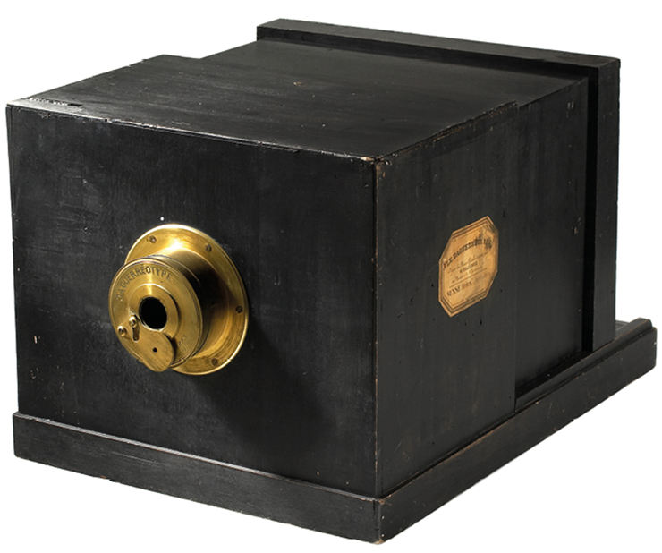
Câmara de daguerreótipo.
Liudmila&Nelson/Museu da Fotografia Westilcht, Viena
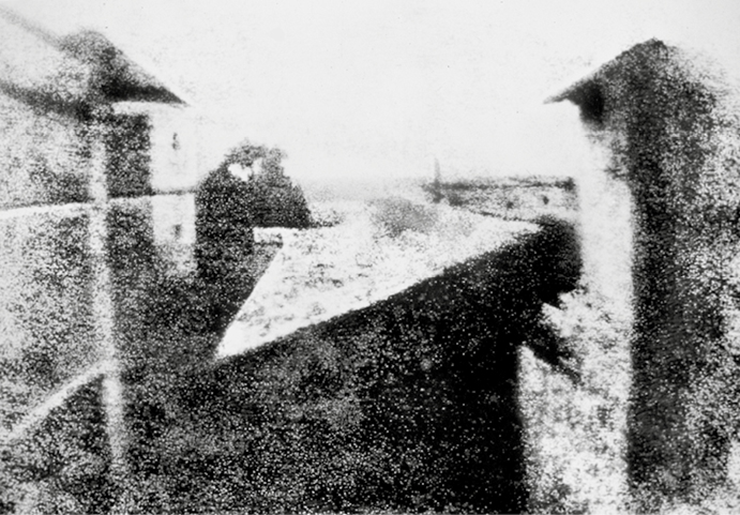
NIÉPCE, Joseph Nicéphore. Vista da janela
em Le Gras, c. 1826 ou 1827. Fotografia p&b,
20 cm × 25 cm.
Coleção Gernsheim, Austin
Acredita-se que o daguerreótipo tenha chegado ao Brasil por volta
de 1840. Inicialmente, a produção de imagens por meio desse dispositivo
era muito cara; apenas as pessoas de elevado poder aquisitivo podiam
encomendar seus retratos fotográficos. No entanto, nas décadas de 1850
e 1860, com o aperfeiçoamento técnico, esse tipo de reprodução tornou-se acessível para um grupo maior de
pessoas, embora ainda fosse de
alto custo.
o custo.
No Brasil, Otto Hees (1870-1941), funcionário público, militar, político
e também fotógrafo, ganhou destaque por ter realizado a última foto da
família imperial antes da deposição e do exílio, em Petrópolis (RJ), dias
antes da Proclamação da República. No século XX, Otto abandonou a
fotografia e exerceu os cargos de secretário executivo e delegado de
polícia em Petrópolis.
A documentação por registro fotográfico também ganhou destaque
no Brasil à medida que os equipamentos foram sendo aperfeiçoados e
se tornando mais acessíveis. Nesse campo, destacaram-se Marc Ferrez
(1843-1923) e Militão Augusto de Azevedo (1837-1905), que registraram
aspectos das principais cidades brasileiras.
Marc Ferrez, mais do que registrar um fato, preocupava-se em compor
com arte uma cena, mostrando acontecimentos de maneira poética. Em
suas composições, apresentava preferência por horizontes longínquos,
perspectivas altas ou de cima para baixo, planos demarcados e luzes
contrastantes; buscava elementos pitorescos que marcavam a paisagem,
revelando uma aproximação do fotógrafo com os pintores acadêmicos
da época.
Ferrez recebeu o convite para integrar, como fotógrafo, a expedição
científica chefiada por Charles Frederick Hartt (1840-1878) e financiada
pela Comissão Geológica do Império. Nessa função percorreu os atuais
estados da Bahia, de Pernambuco, de Alagoas e parte da região amazônica. Com isso, registrou muitas
paisagens, retratos e obras públicas.
Militão Augusto de Azevedo registrou paisagens da cidade de São
Paulo, criando a obra: Álbum comparativo da cidade de São Paulo, em
que apresentou fotos de um mesmo local tiradas a partir dos mesmos
ângulos, mas em momentos diferentes. Dessa maneira, Azevedo documentou as mudanças que a cidade sofreu
entre os anos de 1862 e 1887,
destacando, além da paisagem e da arquitetura, os costumes, comportamentos, roupas e meios de transporte
do período.
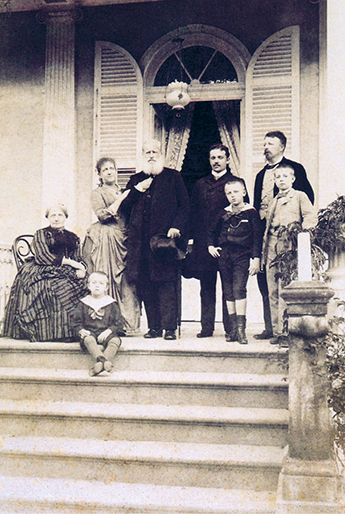
Retrato fotográfico da família imperial
na casa da Princesa Isabel realizado
por Otto Hees, em Petrópolis (RJ), em
1888. Da esquerda para a direita, estão:
D. Teresa Cristina, D. Antônio Gastão,
D. Isabel, D. Pedro II, Pedro Augusto,
Conde d’Eu, D. Luís Maria e D. Pedro de
Alcântara.
Otto Hees/Coleção particular
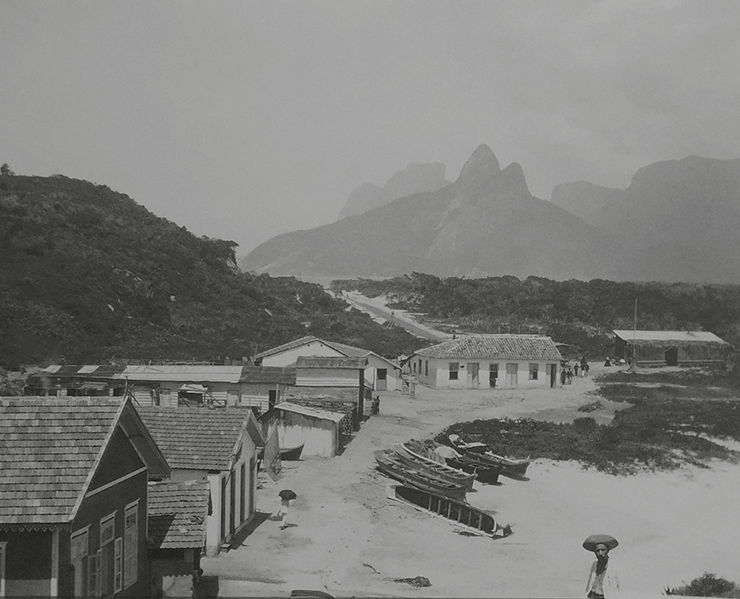
FERREZ, Marc. Copacabana, c. 1895. Fotografia. Acervo Instituto Moreira
Salles, Rio de Janeiro.
Marc Ferrez/Acervo Instituto Moreira Salles
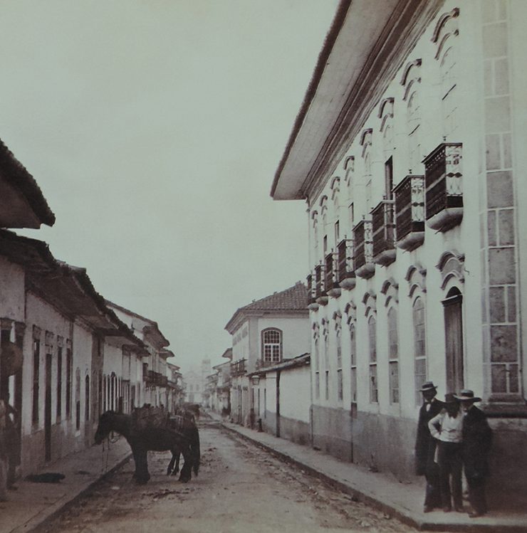
MILITÃO. Rua São Bento, c. 1862. São Paulo. Coleção
particular.
Coleção particular
O retrato e a popularização da fotografia
Durante o século XIX, a fotografia ainda não era vista como uma forma
de arte, mas, sim, como uma ferramenta de registro documental ou pessoal.
O gênero retrato foi o principal responsável pela popularização da
fotografia. Naquela época, apenas as pessoas com alto poder aquisitivo
podiam contratar pintores para fazerem seus retratos, mas, com as câmeras fotográficas, qualquer pessoa
podia ser retratada por um preço
acessível. Por essa razão, a procura pelos retratos cresceu rapidamente
e a fotografia ganhou um importante espaço social.
A capacidade de registrar o mundo com aparente fidelidade fez com
que a fotografia fosse explorada por diversos segmentos da sociedade,
de inventores a artistas, tanto para captar o momento presente quanto
para produzir efeitos visuais nos quais a realidade era apresentada em
diferentes perspectivas.
Fotografia e pintura
No final do século XIX e início do século XX, arte e fotografia começavam a se aproximar cada vez mais.
Diversos pintores e escultores da época fizeram experimentos com a fotografia, utilizando-a como
referência
para suas criações, sobretudo as fotografias de modelos, que auxiliava
em seus processos criativos.
As primeiras poses para os retratos imitavam as comumente utilizadas
nas pinturas. Por ser algo muito novo, as pessoas ainda não sabiam como
se portar diante da câmera fotográfica e buscavam nas pinturas referências para poses, de modo que
conseguissem ficar sem se mover pelo
longo tempo de exposição.
As fotografias que simulavam o estilo das pinturas e eram manipuladas pelo uso de foco brando e tons
sépia, por exemplo, tornaram-se comuns no início do século XX e eram chamadas de pictorialismo.
Muitos
fotógrafos americanos e europeus criaram sociedades – que funcionavam como se fossem clubes –, de modo que
pudessem exibir suas obras
e divulgar a fotografia. Esses artistas buscavam apresentar em suas fotos
o que consideravam ser “a verdade”, empregando a filosofia naturalista
em seus discursos.
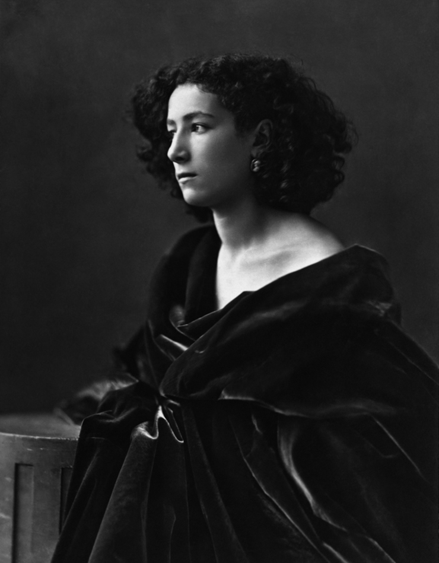
NADAR, Félix. Atriz francesa Sarah Bernhardt,
1864. Fotografia p&b.
Félix Nadar/The Getty Center
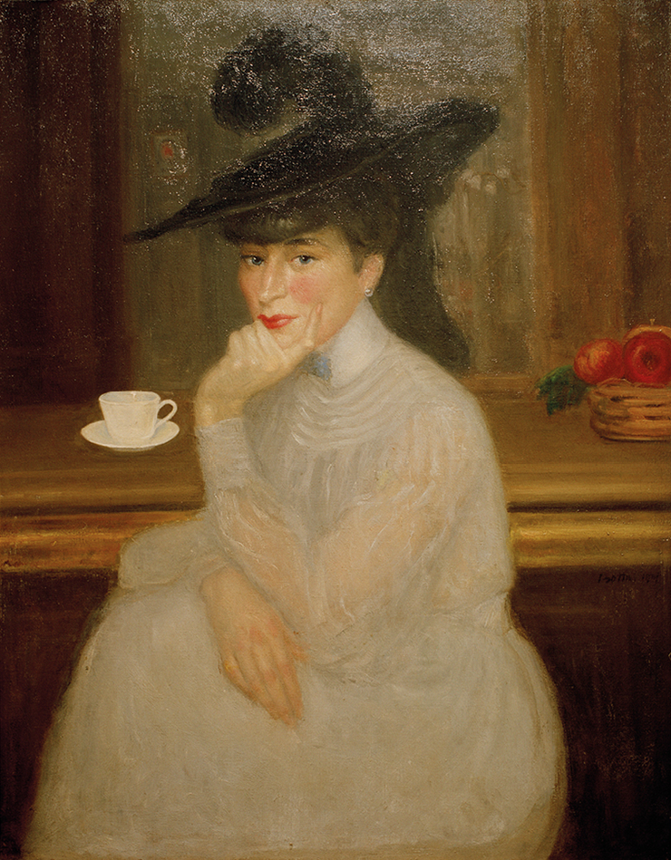
BOTTINI, George. Retrato de Sarah Bernhardt,
1907. Óleo sobre tela, 92 × 73 cm. Musée du Petit
Palais, Genebra.
akg-images/Album/Fotoarena/Musée
Fotografia experimental
A fotografia permitiu às pessoas conhecerem o mundo de uma maneira diferente, sob ângulos ainda
desconhecidos por grande parte da população. Imagens de diversas localidades sob diferentes pontos de
vista
revelaram as potencialidades documentais e inusitadas dessa invenção.
Gaspard-Félix Tournachon (1820-1910), conhecido como Félix Nadar,
foi um fotógrafo francês que se destacou por fazer as primeiras fotografias aéreas, a bordo de um balão de
ar quente, e por realizar autorretratos
registrando seu feito.
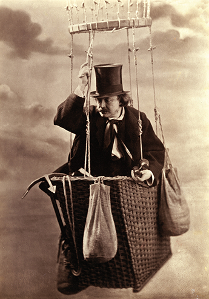
NADAR, Félix. Nadar em gôndola de
balão, c. 1863. Fotografia p&b.
Album/adoc-photos/Album/Fotoarena
Outra grande inovação para o mundo fotográfico da época foi a invenção da película celuloide ou filme
fotográfico, existente até os dias atuais.
Ela foi inventada pelo fotógrafo inglês Eadweard Muybridge (1830-1904),
que se tornou conhecido por utilizar várias câmeras ao mesmo tempo,
com o objetivo científico de capturar a imagem em movimento, mostrando os movimentos quadro a quadro. Em
um de seus trabalhos como fotógrafo em expedições nos Estados Unidos, ele foi chamado pelo então
governador da Califórnia, Leland Stanford, para comprovar sua tese de
que, durante um galope, todos os quatro cascos de um cavalo deixavam
a terra ao mesmo tempo. Muybridge desenvolveu um esquema para a
captação instantânea de imagens. Seu trabalho envolveu o processamento de imagens fotográficas e um
disparador elétrico fora da câmera.
Em 1877, Muybridge fotografou um cavalo de corrida em meio ao galope. No ano seguinte, o fotógrafo
expandiu o experimento capturando,
com sucesso, o galope de um cavalo quadro a quadro; para isso, usou
uma série de 12 câmeras, posicionando-as uma ao lado da outra, a uma
distância de 21 polegadas, fotografando os passos do cavalo em 1 milésimo de segundo.
Com esse registro, foi possível verificar que todos os cascos do cavalo realmente não tocavam a terra,
embora não com as patas completamente estendidas, como os pintores da época costumavam registrar.
MUYBRIDGE,
Eadweard. Estudo
fotográfico de 16
quadros de cavalo
de corrida ‘Annie G.’
galopando, c. 1887.
Eadweard Muybridge. In: Human and Animal Locomotion, Philadelphia, 1887. Library of Congress, Whashing,
D.C.
Muybridge fez diversos registros da dinâmica de locomoção dos animais. Apesar de esses estudos
fotográficos terem sido planejados com
objetivo científico, seus resultados influenciaram diversos pintores, entre
eles o artista futurista Giacomo Balla, que, desconstruindo a imagem, conseguiu dar ritmo, movimento e
velocidade às cenas e aos objetos retratados, usando a técnica de fotografia em sequência e longa
exposição.
Observe a tela Dinamismo de um cão na coleira, na qual ele retrata uma
cena aparentemente trivial, mas carregada de movimento. Tal quadro surpreendeu o público à época.
BALLA, Giacomo. Dinamismo de
um cão na coleira, 1912. Óleo sobre
tela, 89,8 cm × 109,8 cm. Albright
Knox Art Gallery, Buffalo, Nova York.
Muybridge inventou o zoopraxiscópio, uma máquina que exibia imagens de maneira animada, por meio do
manuseio de uma manivela, a qual
girava um pequeno disco que intercalava imagens fotográficas do mesmo
objeto em posições diferentes. Esse dispositivo servia ainda para projetar
as imagens para estudo de movimento. Esse sistema foi o precursor do desenvolvimento da película de filme,
e suas apresentações foram aclamadas
tanto pelo público em geral como pelos cientistas da época.
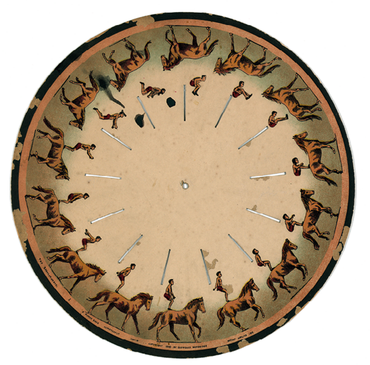
Zoopraxiscópio inventado
por Muybridge, 1893.
World History Archive/Alamy/Fotoarena
Entre 1883 e 1886, Muybridge fez um total de 100 mil imagens, como
pesquisador da Universidade da Pensilvânia, e, embora seu trabalho tivesse um viés artístico, também
influenciou os estudos iniciais da biomecânica e da mecânica dos atletas.
Fotografia documental
No início do século XX, surgiu, nos Estados Unidos, um
tipo de fotografia que trazia em seu cerne críticas sociais sobre situações controversas do cotidiano e
tinha a função de
conduzir o público a refletir sobre os fatos e acontecimentos
sociais.
Nos anos de 1930, época da Grande Depressão nos Estados Unidos, a fotógrafa Dorothea Lange
(1895-1965)
trabalhou para um órgão estatal norte-americano chamado Farm
Security Administration, criado para dar apoio aos desfavorecidos e vitimados pela crise. Ela, então,
percorreu diversos
estados do sul e oeste dos Estados Unidos a fim de documentar, por registro fotográfico, o impacto da
Depressão de 1929
na vida dos camponeses, que estavam sem emprego e sem
moradia. Ela é autora de uma das fotografias mais reproduzidas da história: Mãe migrante, feita em 1936,
na qual captura a imagem de uma mãe cuja feição transparece extrema
preocupação e tristeza. O registro apareceu em mais de
10 mil publicações.
O estilo de Lange influenciou vários fotógrafos e colaborou, mais tarde, para o surgimento da fotografia
documental.
Atualmente, a fotografia documental é um gênero fotográfico que incorpora diversas propostas, temas e
estéticas.
Caracteriza-se pela representação do social, de uma época
ou local abordado, com uma linguagem estética de cunho
interpretativo e poético. Esse gênero herdou muito do fotojornalismo, que visa informar sobre
uma realidade tendo o
compromisso com a verdade.
Por dentro da arte
Durante o século XX, surgiram diversos gêneros fotográficos, e a fotografia
passou a ser entendida também como
arte. Um dos processos de composição
fotográfica desenvolvido nesse período
foi a fotomontagem.
Trata-se de um trabalho no qual a imagem é composta de recortes de fotografia
ou da reunião de várias imagens em uma
mesma película com a sobreposição de
imagens.
Ainda no final do século XIX, o fotógrafo Valério Rodrigues Vieira (1862-1941)
criou uma fotomontagem em que se autorretratou como personagens participando de
um sarau, inclusive em um busto disposto
pela sala e quadros pendurados em uma
das paredes. Essa obra foi premiada com
a medalha de prata na Louisiana Purchase
Exposition, conhecida como a Feira Mundial
de Saint Louis de 1904, nos Estados Unidos,
por conta da sua criatividade.
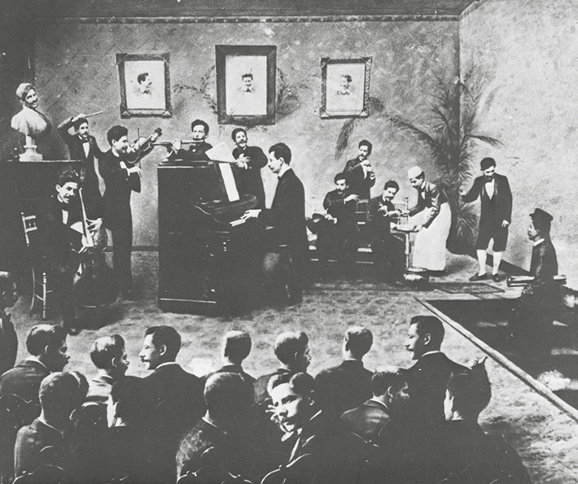
VIEIRA, Valério. Os trinta Valérios, 1901. Fotografia p&b, 22 cm × 28,7 cm.
Biblioteca Nacional, Rio de Janeiro.
Vieira/Acervo
Mãos à obra
Inspirado na fotomontagem de Valério Vieira, Os trinta Valérios, selecione fotografias suas em
diversas situa-
ções e crie uma composição com a técnica da colagem.
Materiais
Fotografias diversas;
papel Canson ou papel tipo paraná.
Procedimento
Selecione imagens pessoais diversas;
crie uma composição de colagem, em tamanho 30 cm × 40 cm, no papel selecionado por você;
elabore um título;
por fim, coloque autoria.
Lembre-se de que o artista Valério Vieira se colocou em várias posições e situações em uma única imagem,
ou seja, em uma mesma cena. Sendo assim, é muito importante que os recortes que você vai selecionar e
colar
tenham sentido na composição de um único contexto. Elabore uma legenda com título, nome do autor e depois
organize uma exposição, em conjunto com os colegas.
Nascimento do cinema
A primeira sessão pública de cinema foi organizada na França pelos
irmãos Auguste (1862-1954) e Louis Lumière (1864-1948), que desenvolveram um equipamento chamado
cinematógrafo, que imprime uma sucessão de fotos em um filme fotográfico, o qual, posteriormente,
pode ser
projetado por meio de uma manivela. Assim, as imagens são projetadas
rapidamente, dando a impressão de estarem em movimento.
Os irmãos Lumière produziram diversos filmes, a maioria ao ar livre,
com registros de cenas do cotidiano das pessoas. Vale lembrar que esses filmes ainda não tinham som.
Assim, em dezembro de 1895, no Salão
Grand Café, em Paris, o aparelho projetou, em uma grande tela, imagens
de um trem chegando à estação. A projeção causou medo nos espectadores, que, não acostumados com tal
experiência visual, saíram correndo
da sala imaginando que o trem invadiria o local.
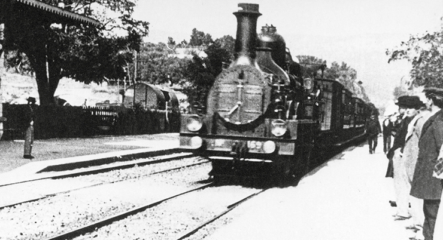
Cena da chegada do trem à estação, em filme projetado pelos irmãos Lumière, em Paris,
em 1895.
Limiere Pictures
Discussão em sala
Fotografia e cinema: qual a
sua experiência?
Quais aspectos da vida social
servem de inspiração para a
fotografia documental? Como
você percebe a estética desse
tipo de fotografia?
Você já viu algumas produções
cinematográficas independentes,
como curtas-metragens ou
documentários? Cite algumas
diferenças entre esse tipo de
produção e os filmes produzidos
por grandes estúdios.
Como a vida da cidade (ou da
comunidade) em que você vive é
representada na fotografia ou no
cinema por artistas locais?
Após a primeira exibição, as sessões de cinema caíram no gosto popular, e as pessoas passaram a frequentar
as exibições de filmes como
forma de lazer. As projeções não eram sonorizadas, por isso, muitas vezes,
músicos eram contratados para tocar enquanto a projeção era exibida ou,
em outros casos, pequenos diálogos eram lidos por narradores ao vivo.
Os primeiros filmes exibidos, tanto na Europa quanto na América do
Norte, eram projeções públicas de pequenos documentários que duravam apenas alguns minutos, mostrando
cenas do cotidiano, de família ou
a saída do trabalho, sem nenhuma história em particular.
No entanto, no final do século XIX, o ilusionista francês Georges
Méliès (1861-1938) começou a exibir filmes que continham enredo e efeitos especiais, o que
popularizou
técnicas como o stop-motion. Méliès foi
e ainda é considerado um mágico do cinema, pois, por meio de técnicas
cinematográficas, manipulava as sequências de imagens de maneira fantasiosa e envolvente, criando ficções.
Uma de suas principais produções
é Viagem à Lua, de apenas 14 minutos, obra considerada precursora dos
filmes de ficção científica.
Durante 30 anos, o cinema permaneceu com imagens sendo projetadas sem som e ficou conhecido como a Era do
cinema mudo, da qual
Charles Chaplin (1889-1977) é um de seus maiores expoentes. As exibições aconteciam em teatros e
eram acompanhadas de músicas executadas por um pianista ou por uma orquestra.
Até esse momento, era na Itália e na França que o cinema era mais
popularizado e onde foram produzidos diversos filmes. Porém, com a Primeira Guerra Mundial, a indústria
europeia do cinema foi arrasada, e os
Estados Unidos passaram a se destacar. Assim, rapidamente Hollywood
se transformou no mais importante centro da indústria cinematográfica.
Nesse contexto, o diretor David Wark Griffith (1875-1948) se destacou
com o filme O nascimento de uma nação, de 1915. Essa película se popularizou na época, apesar de causar
polêmica por glorificar estereótipos
raciais intoleráveis. O filme incentivava a escravatura e a segregação racial, além de promover a Ku Klux
Klan. Outra obra de destaque de Griffith
foi Intolerância, que apresentava quatro histórias simultâneas, o que causou incompreensão à época,
destacando-se mais pela música do que
pela narrativa.
No início do século XX, várias produtoras cinematográficas já haviam
feito experimentos de sonorização das películas, mas ainda havia grandes problemas de sincronização e
amplificação.
Até que, em 1927, a Warner Bros. lançou o filme The jazz singer,
um musical que, pela primeira vez na história do cinema, apresentava
pequenos diálogos e canções sincronizados e acompanhados de cenas
sem som, como no cinema mudo. Então, em 1928, a Warner lançou o filme The lights of New York, com som
totalmente sincronizado. Os últimos
filmes mudos da história do cinema foram Luzes da cidade e Tempos
modernos, de Chaplin, que continuam aclamados até os dias atuais.
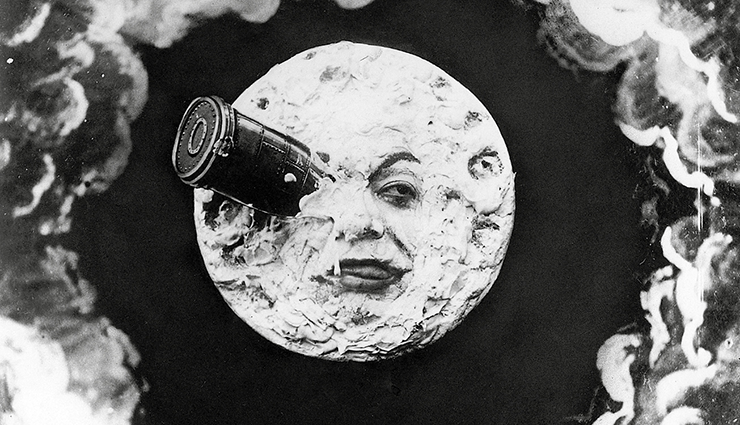
Cena do filme Viagem à Lua, de Georges Méliès, lançado em 1902.
Georges Méliès
Quando os filmes passaram a ser
sonorizados, foi preciso adaptar os
diálogos de maneira que ficassem
inteligíveis ao público. No início,
a câmera filmadora fazia muito
barulho. Então, foi criado o blimp,
uma espécie de caixa-invólucro
inserida no corpo das câmeras,
deixando-as mais silenciosas para
que pudessem ser usadas dentro
dos sets de filmagem.
Com o passar do tempo, surgiram
novos aparatos tecnológicos,
como microfones, que auxiliavam
na captação do som e na
compreensão dos textos falados
pelos atores. No final de 1929, o
cinema de Hollywood era quase
totalmente sonorizado.
Aplicando
conhecimentos
1
Discorra sobre o surgimento do cinema e seus in-
ventores.
2
Funiversa-DF
A conotação, isto é, a imposição de um
sentido, segundo a mensagem fotográfica propriamente dita, elabora-se nos diferentes níveis de
produção da fotografia: escolha, processamento técnico,
enquadramento, diagramação; é, em suma, uma codificação do análogo fotográfico.
BARTHES, Roland. O óbvio e o obtuso: ensaios críticos III.
Rio de Janeiro: Nova Fronteira, 1990, p. 15 (Adapt.).
Segundo o texto, é correto afirmar que:
o enquadramento varia de acordo com o tamanho final da fotografia impressa.
a conotação é o sentido preciso da foto.
a conotação é um sentido diferente da situação
real, conforme o enquadramento, a iluminação,
entre outros fatores, escolhido pelo fotógrafo na
tomada da imagem.
o controle da luz é também uma forma de enqua-
drar a imagem.
conotar uma imagem é o trabalho do editor che-
fe, ao escolher uma fotografia, depois do trabalho
fotográfico elaborado.
3
FCC 2016
Mas a verdadeira vítima da fotografia não
foi a pintura de paisagem, e sim o retrato em miniatura. A evolução foi tão rápida que por volta de
1840 a
maioria dos pintores de miniaturas se transformaram
em fotógrafos [...].
Nesse trecho do texto “Pequena História da Fotografia”, Walter Benjamin se refere à substituição da
pintura pela fotografia em uma de suas funções. Infere-se
do texto que a
fotografia substituiu integralmente a pintura em
todas as suas funções estéticas e sociais.
fotografia substituiu a Pintura de retratos em miniatura porque as duas técnicas se equivalem enquanto
procedimento técnico e artístico.
maioria dos pintores que produziam a chamada
Pintura de retratos em miniatura passaram a fazer
fotografia por ambas terem como finalidade, neste caso, o retrato.
fotografia, ao contrário da pintura, não pode ser considerada uma arte, por seus atributos comerciais.
maioria dos pintores de retratos em miniaturas
escolheu passar a fotografar por conta de seus
talentos para a técnica fotográfica.
4
IFPA 2015
A invenção da fotografia, no século XIX,
trouxe novas questões ao fenômeno da reprodução
da imagem. Entre elas, a influência nos novos estilos
artísticos que surgiram no fim do século. Em meio
século, alterou-se o universo da pintura, da mesma
forma que o cinema, em 1985, fez com que a fotografia tivesse que se redescobrir. Para Arago, o
primeiro
divulgador da descoberta, “o procedimento não passava de um utensílio, um auxiliar do trabalho
científico posto à disposição de astrônomos, botânicos e
arqueólogos”. No entanto, Delaroche, pintor de batalhas até então no auge de sua carreira, saiu da
sessão exclamando: ‘A partir de hoje a pintura morreu’”
(DEBRAY, 1993, p. 263).
Debates dessa ordem são frequentes na História da
Arte, pois:
os processos técnicos que inovam as ideias de
cada geração não liquidam obrigatoriamente
com as das gerações anteriores. A fotografia,
por exemplo, valorizou o trabalho dos pintores,
pois a pintura moderna muda, a partir de uma
espécie de diálogo com a fotografia, apesar da
invenção do cinema, que veio logo a seguir,
não possuir nenhuma relação com a invenção
da fotografia.
a obra de arte pode ser superada pelas novas
tecnologias de reprodução, tornando-se um objeto ultrapassado, pois nenhuma arte é imutável.
a fotografia foi apresentada pela primeira vez
como recurso para auxiliar o trabalho da ciência,
entretanto, sua utilização hoje se estende aos
mais diversos campos de atividades. Da mesma
forma, a criação do vinil impulsionou a indústria
fonográfica e contribuiu para a divulgação das
composições musicais.
com a invenção da fotografia, a arte da pintura
perdeu sua função absoluta de retratar pessoas e
acontecimentos importantes, o que de fato gerou
uma crise nesta arte do mesmo modo que a música eletrônica vem contribuindo para a extinção
gradativa da figura do músico.
a fotografia chegou para transformar o mundo
das artes, retirando todo valor do original de
cada obra pela divulgação de suas cópias. A
fotografia e o cinema são técnicas que provam
que os processos de reprodução da imagem
podem ser cada vez mais sofisticados, os processos técnicos que inovam as ideias de cada
geração não sofrem influência de invenções
anteriores.
Consolidando saberes
1
UEM-PR A fotografia, com sua capacidade de fixar
imagens com muito mais detalhes, realismo e objetividade, revolucionou a forma como o homem poderia ver
o mundo e, já há bastante tempo, provou
ser mais uma linguagem artística. Sobre a fotografia,
assinale o que for correto.
01.
A paixão de Cartier-Bresson pela geometria o
levava a compor cuidadosamente as cenas enquadradas dentro do visor de sua câmera, ainda
que o artista praticasse a fotografia do que chamava de “momento decisivo”, que exigia rapidez
e olhar atento.
02.
A câmera fotográfica portátil e o instantâneo,
que surgiram na mesma época da ascensão da
pintura impressionista, permitiram a captura de
cenas casuais e a possibilidade de ângulos inesperados
04.
A invenção da máquina fotográfica foi fundamental para o surgimento da arte moderna, pois os
artistas procuravam, cada vez mais, explorar temas em que fossem insubstituíveis.
08.
A capacidade de obtenção de imagens fidedignas tornou a fotografia o meio preferencial para
reprodução do real. Se isso, por um lado, permite o registro documental, por outro, limita seu
potencial artístico à representação da natureza e
de fatos do cotidiano.
16.
Pouco depois da invenção do daguerreótipo,
estúdios fotográficos surgiram no mundo todo,
e a fotografia substituiu as pinturas de retratos
(tão procurados pelos burgueses) de forma mais
acessível e confortável para quem posava.
Soma:
2
UPF-RS
A extraordinária audiência de filmes como
o Homem Aranha é uma demonstração de que o
cinema ainda é uma das principais manifestações
culturais da época contemporânea. A história desse
extraordinário meio de comunicação teve início em
1895, quando foi projetado o primeiro filme. Essa histórica projeção foi feita:
pelos irmãos Marx.
pelos irmãos Lumière.
por Charles Chaplin.
por Max Eastman.
por Thomas Alva Edison.
3
IFTO 2014
Sobre o cinema, analise os itens abaixo:
George Méliès produziu o filme Viagem à Lua.
Charles Chaplin dirigiu e atuou no filme Tempos
Modernos.
David W. Griffith produziu o filme Metrópole.
O Filme Nosferatu é um representante do Expressionismo Alemão.
Indique a única opção correta:
Somente estão corretos os itens I e II.
Somente estão corretos os itens I, II e IV.
Somente estão corretos os itens III e IV.
Somente estão corretos os itens I, II e III.
Somente estão corretos os itens II, III e IV.
3
IFSC 2014
A fotografia e arte representam respostas
paralelas às suas épocas e, em geral, têm expressado
a mesma visão de mundo. Grande parte do impulso
veio de uma busca do Verdadeiro e do Natural.
JANSON, H. W.; JANSON, A. “Iniciação à história da arte”.
Sobre a fotografia, marque (V) para Verdadeiro e (F)
para Falso.
( ) A fotografia não é, de forma alguma, um meio
assim tão neutro. Sejamos ou não capazes de
perceber tal fato, a câmera altera as aparências e
reinterpreta o mundo a nossa volta, fazendo com
que o vejamos, literalmente, em novos termos.
( ) Como a xilogravura, a água-forte, a gravura em co-
bre e a litografia, a fotografia é uma forma de impressão que depende de processos mecânicos.
( ) Depois de mais de dez anos de pesquisas químicas e mecânicas, o daguerreótipo,
usando
exposições positivas, foi trazido a público em
1839, dando origem à era da fotografia.
( ) A invenção da fotografia foi uma resposta aos
anseios artísticos e forças históricas subjacentes ao Surrealismo.
( ) Por volta de 1800, grande parte da burguesia
mandava fazer retratos seus e foi nos retratos que
a fotografia obteve sua aceitação mais imediata.
Assinale a alternativa que contém a sequência corre-
ta, de cima para baixo.